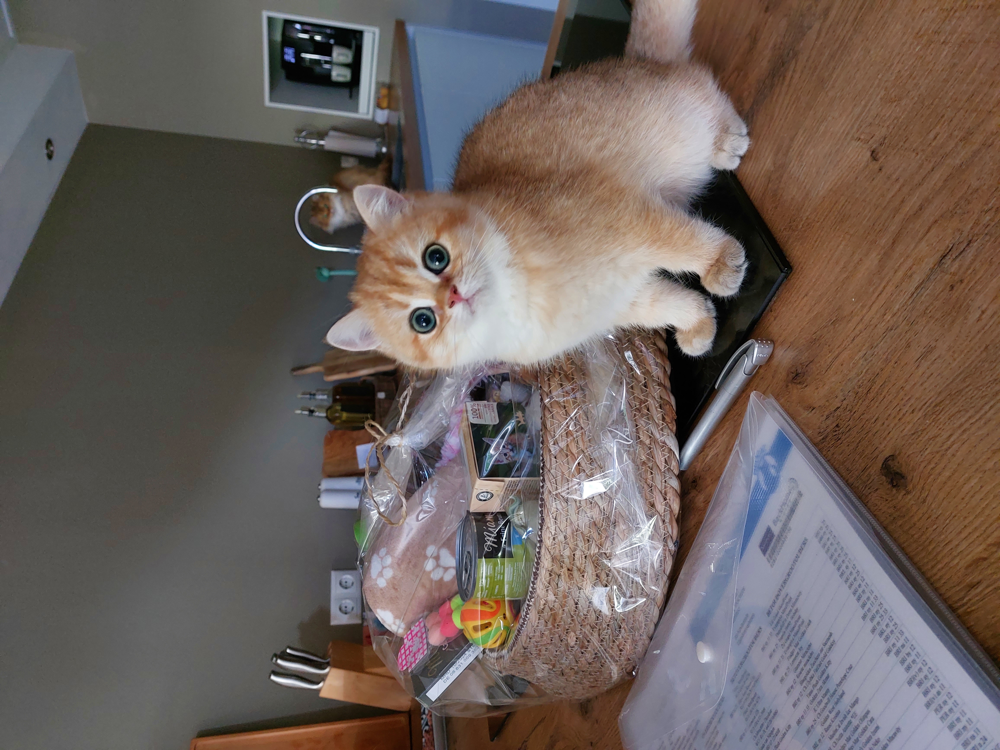

Wij werken via de website en onze social media: daar laten we weten wanneer er een nestje verwacht wordt of geboren is. Heb je interesse in een kitten, dan horen we dat graag van je.
We work through our website and social media, where we announce when a litter is expected or has been born. If you're interested in a kitten, we'd love to hear from you.
Wil je je aanmelden, stuur ons dan een mail waarin je wat over jezelf vertelt: denk aan je leeftijd, gezinssamenstelling, woonsituatie, werk, ervaring met katten, eventuele andere huisdieren en eventuele voorkeur voor geslacht, kleur en/of haarlengte.
To apply, send us an email telling us a bit about yourself: think of your age, family situation, living situation, work, experience with cats, any other pets, and any preference for gender, colour and/or coat length.
Je bent altijd welkom om kennis te maken met ons en onze katten, ook voordat er kittens zijn. Zodra er kittens geboren zijn, wordt er een kennismakingsgesprek gepland vanaf een week of 8. Is er van beide kanten een klik en wederzijds vertrouwen, dan kun je een kitten reserveren. Tot de dag van overdracht blijft een kitten eigendom van Cattery Okaukuejo.
You're always welcome to come and meet us and our cats, even before any kittens are on the way. Once kittens are born, a meet-and-greet is planned from around 8 weeks of age. If there's a click and mutual trust on both sides, you can reserve a kitten. Until the day of handover, a kitten remains the property of Cattery Okaukuejo.
Vanaf de reservering houden we je regelmatig op de hoogte via foto's, berichtjes en onze social media.
From the moment of reservation, we'll regularly keep you updated with photos, messages and through our social media.

Het is voor ons erg belangrijk dat onze kittens in een fijn en liefdevol huis terechtkomen, en daarom zijn we kritisch in het uitzoeken van hun nieuwe gouden mandje.
It's very important to us that our kittens end up in a good, loving home, which is why we're selective when it comes to finding their new home.
Onze kittens mogen verhuizen vanaf 14 weken oud, mits ze een goed gewicht hebben en helemaal fit en gezond zijn.
Our kittens may go to their new home from 14 weeks of age, provided they have a good weight and are completely fit and healthy.
Ook nadat onze kittens verhuisd zijn, kun je altijd bij ons terecht voor advies en hulp. Het welzijn van onze katten gaat boven alles, en we vinden het dan ook heel leuk om op de hoogte gehouden te worden van hoe het met ze gaat.
Even after our kittens have gone to their new home, you can always come to us for advice and help. The wellbeing of our cats comes above all else, and we love being kept up to date on how they're doing.
Heb je interesse in een van onze kittens? Laat het ons weten via onderstaand formulier.
Interested in one of our kittens? Let us know using the form below.